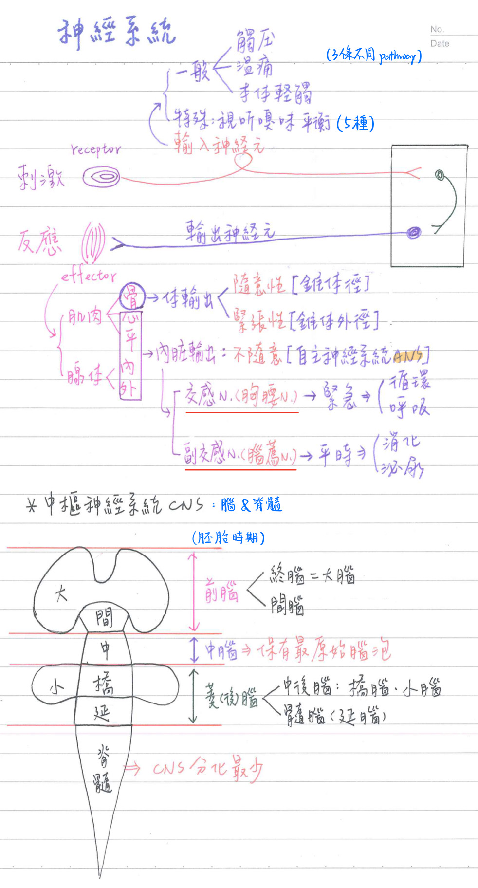
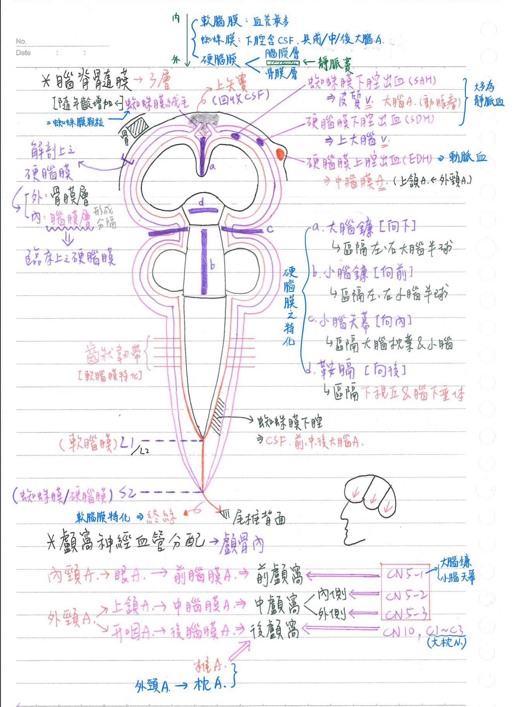
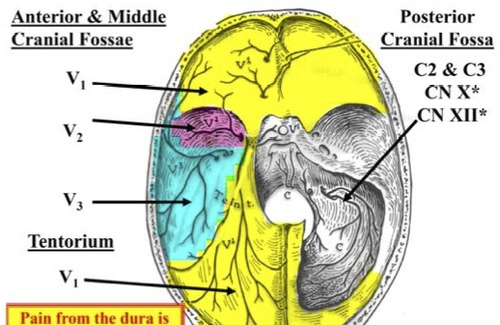
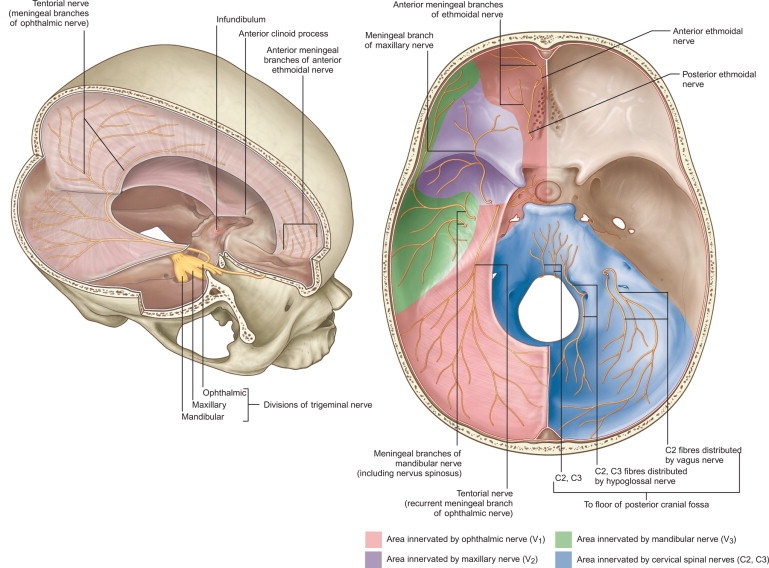
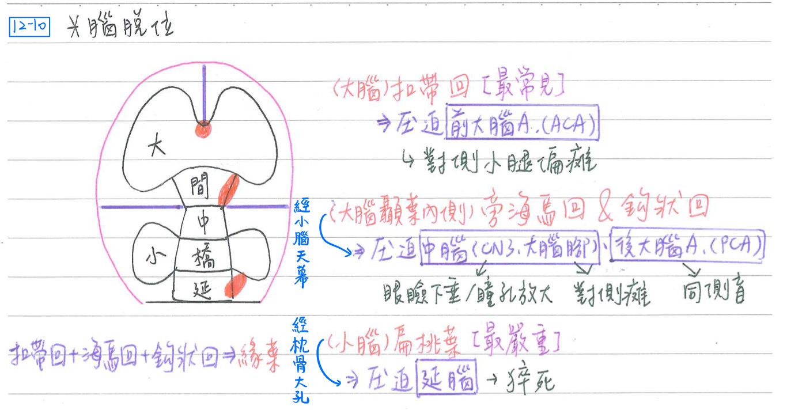
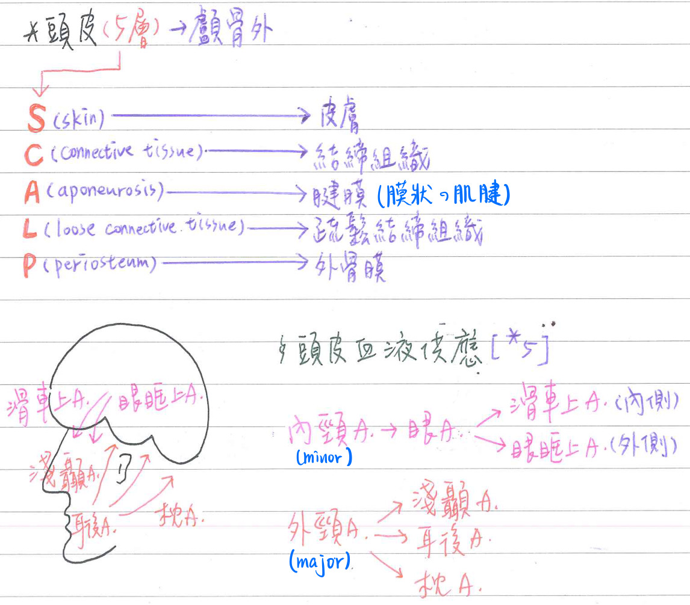
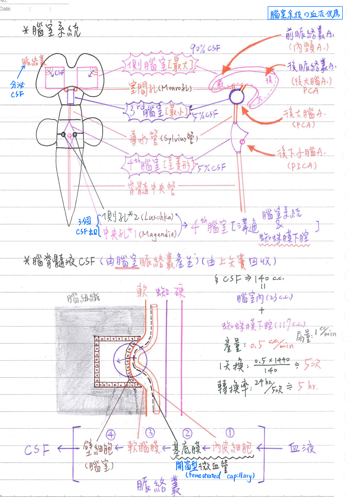
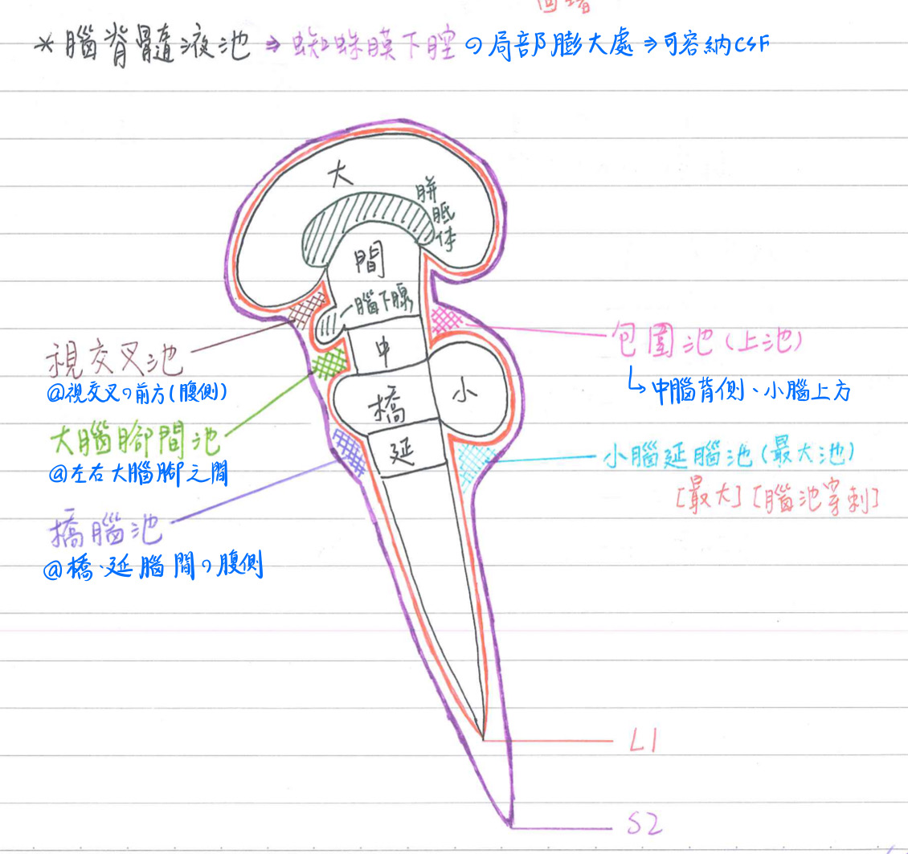
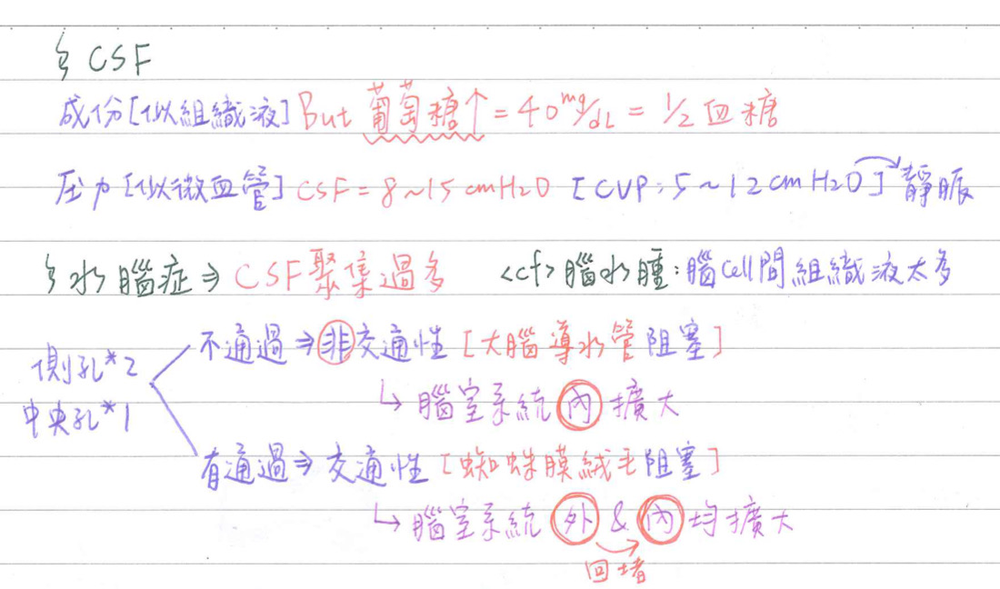

🧠 CNS總覽、腦脊髓膜&CSF
中樞神經系統總覽：腦+脊髓
- 腦(brain)
- 大腦(cerebrum)：具皮質(灰質)、髓質(白質)
- 間腦(diencephalon)：丘腦/視丘(thalamus)、底丘腦(subthalamus)、下丘腦/下視丘(hypothalam)、上丘腦(epithalamus)
- 腦幹(brainstm)：中腦(mid-brain)+橋腦(pons)+延腦(mdullablongata)
- 小腦(cerebellum)：具皮質(灰質)、質(白質)
- 脊髓(spinal cord)：具皮質(白質)、髓質(灰質)
★胚胎發育：源自外胚層之神經管
- 頭部→腦：
- ★前腦(prosencephalon)→
- 終腦(telencephalon)=大腦(cerebrum)
- 間腦(diencephalon)
- 中腦(mesencephalon)：保有最原始腦泡之形態(沒有進一步分化)
- 後腦(=菱腦，rhombencephalon)→
- 中後腦(metencephalon)→橋腦(pons)、小腦(cerebellum)
- 髓腦(myelencephalon)→延腦(medulla oblongata)
- ★前腦(prosencephalon)→
- 尾部一脊髓(spinal cord)：分化最少

腦脊髓膜(meninges)&腦脊髓液(CSF)
CNS之保護機制
- 骨(bone)：最重要
- 顱骨(skull bone)：保護腦
- 脊椎骨(vertebra)：保護脊髓
- 腦脊髓膜(mennges)
- 腦脊髓液(cerebrospinal fluid,CSF)
腦脊髓膜(meninges)
軟腦膜(pia mater)：內層
- [重要]血管最豐富
- 脊髓部可特化成★★齒狀韌帶(denticulate l.)
- 位脊髓之兩旁(★腹根與背根之間，將脊髓分為前後兩半)
- 固定於蛛網膜、硬腦膜，使脊髓懸浮於中央
- 终止於★L1(下緣)=★圓錐(conus medullaris)，以終絲(filumterminalis，呈藍色)固定於尾椎之背側
※★終絲：特化的軟腦膜
蛛網膜(arachnoidea)：中層
- 終止於S2
- [重要]★蛛網膜下腔(subarachnoid space)：蛛網膜-軟腦膜之間
- ★充滿CSF(腰椎穿刺：通常經由L3-4或L4-5進針)
- 含前、中、後大腦A
- 沿著視N延伸到眼球後壁
硬腦膜(duramater)：外層
- 終止於S2
- 硬腦膜之外層=骨膜層(endosteal layer)
硬腦膜之內層=腦膜層(meningeal layer) - 外層與內層之間：形成靜脈竇。EX：上矢竇
- ★硬脊膜外腔(epidural space)：富含脂肪&靜脈叢
→無痛分娩(屬於epidural anesthesia)時施打麻醉劑處 - 形成4隔膜(septa)
- 大腦鐮(falx cerebri)：區隔大腦左/右半球
- 附著於額骨(嵴)&篩骨(雞冠)
- 小腦鐮(falx cerebelli)：區隔小腦左/右半球
- 小腦鐮後緣：附著於枕骨(嵴)
- ★小腦天幕(tentorium cerebelli)：區隔枕葉/小腦
- 附著於枕骨、顳骨、蝶骨
- 鞍膈(diaphragm sellae)：區隔下視丘/腦下垂體
- 大腦鐮(falx cerebri)：區隔大腦左/右半球
[重要]神經支配：三叉N(CN5-1,2,3)、迷走N(CN10)、頸N(C1~C3)
- ★★★CN5-1：前顱窩、大腦鐮、小腦天幕
- ★CN5-2：中顱窩之內側
- ★CN5-3：中顱窩之外側
- CN10、C1~C3(大枕N)：後顱窩
[重要]血液供應：內頸A、外頸A、椎A
- 前顱窩：前腦膜A←前篩A←眼A←內頸A
- 中顱窩：中腦膜A(最重要)←上頷A←外頸A
- 後顱窩：
- 後腦膜A←升咽A←外頸A
- 枕A(←外頸A)、椎A
- 脊椎內靜脈叢(internal vertebral venous plexus)：位於硬腦膜上腔(epidural space)
[重要]常見血腫(hematoma)
- 硬腦膜上腔血腫(epidural, EDH)：★★中腦膜A 等破裂出血(動脈血)
- ★EDH常出現清明期(lucid interval)：前後兩次昏迷之間的清醒期。
- ★pterion壓迫性骨折：中腦膜A
- 硬腦膜下腔血腫(subdural, SDH)：上大腦V、橋V等破裂出血(靜脈血)
- 蛛網膜下腔血腫(subarachnoid, SAH)：皮質V、★大腦A(動脈瘤)等破裂出血



[重要]腦脫位(brainherniation)：常因顱內壓上升(IICP)造成
- 大腦鐮下(subfalcial)：大腦扣带回(cingulate gyrus)脫位
→壓迫前大腦A→對側小腿偏癱 - 經小腦天幕(transtentorial)：大腦★顳葉內側之旁海馬回/鉤狀回(uncinate)
→壓迫：- ★★中腦(★動眼N、大腦腳)→眼瞼下垂/瞳孔放大、對側偏瘫
- 後大腦A→同側偏盲
- 經枕骨大孔：★小腦扁桃葉(cerebellar tonsil)→壓迫延腦→粹死

頭皮(SCALP)
- 構造：5層
- S：皮膚(skin)
- C：結缔组織(connective tissue)
- A：腱膜(aponeurosis)=膜狀的肌健
- L：疏鬆結締组織(loose connective tissue)
- P：外骨膜(periosteum)
- 血液供應：
- 外頸A：主要
- ★淺顯A
- 耳後A
- 枕A
- 內頸A：次要
- 眼A→滑車上A(內側) & 眼眶上A(外側)
- 外頸A：主要

腦室系統及腦脊髓液
腦室系統(ventricular system)：共4個
- 側腦室(左、右各一)：位於大腦，體積最大，呈C形
- 具前角、後角、下角(horn) & 體(body)
- 第三腦室：位於間腦(左右丘腦之間)，體積最小
- 側腦室與第三腦室以室間孔(Monro孔)相連接
- 第四腦室：位於橋腦、延腦，後方為小腦；呈菱形
- 大腦導水管(cerebral duct = aqueduct of Sylvius)：位於中腦中央，連接第三腦室與第四腦室
- ★脊髓中央管(central canal)：連接第四腦室&脊髓
- 腦室系統與蛛網膜下腔之溝通管道：皆位於第四腦室
- 側孔(Luschka) x2
- 中央孔(Magendie) x1
腦脊髓液(CSF)：腦室的脈络叢產生，★位於腦室系統&蛛網膜下腔
- [重要]脈絡叢(choroid plexus)：★分泌CSF，讓CSF流入腦室的入口。具3層結構
- ★開窗型微血管(fenestrated capillary)=内皮細胞+基底膜
- 軟腦膜(pia mater)
- ★腦室壁細胞(ependyma)[脈络叢上皮(choroidal epithelium)]
- [96-1補充] 細胞間具有tight junction：(應該是可以分泌CSF的地方都有?)
- ★3rd腦室的脈絡叢上皮(=ependymal cell衍生)
- ★側腦室的襯裏細胞(ependymal cell)
- 沒有tight junction的：脊髓中央管&大腦導水管的襯裏細胞(ependymal cell)
- 脈絡叢之腦室壁細胞具經細胞運輸(transcellular transport)功能：利於血液與腦脊髓液之物質交換
- 細胞具基底摺(basalin fold)：富含Na+-K+ pump、粒線體
- 細胞內含大量胞飲小泡(inoccvesicle)
- 細胞之間具緊密結合(tight junction)
- 側腦室之脈络叢佔90%(左右各45%)
- 第三腦室&第四腦室之脈絡叢：各佔5%
腦室之主要供應血管
- 側腦室之脈絡叢：前脈絡叢A(←★內頸A)、後脈絡叢A(←後大腦A)
- 第三腦室之脈絡叢：後大腦A(←基底A)
- 第四腦室之脈路叢：後下小腦A(←椎A)

蛛網膜下腔之腦脊髓液池(cisterna)：蛛網膜下腔局部擴大處
- 背側：
- ★小腦延腦池(cerebellomedullary)/★★最大池(magnus)：
- 位於延腦背側/小腦前下方
- ★嬰兒最常進行腦池穿刺之處(以抽取CSF)
- 上池(superior)/包圍池(ambiens)：位於中腦背側/小腦前上方
- ★小腦延腦池(cerebellomedullary)/★★最大池(magnus)：
- 腹側：
- 視交叉池(chiasmatic)：位於視交叉腹側
- 大腦腳間池(interpeduncular)：位於中腦之大腦腳間的腹側
- 橋腦池(pontine)：位於橋腦、延腦間之腹側
- [重要]CSF經由蛛網膜絨毛(arachinoid villi)/蛛網膜顆粒(arachinod granulation)注入上矢竇回收
- 蛛網膜顆粒之數目隨年紀增加

CSF總覽
- 含量：[重要]140 c.c = 腦室內(23 c.c)+蜘妹膜下腔(117 c.c)
- 抽CSF抽太多→腦疝(brain herniation)
- 產量：0.5 c.c/min；轉換率(turnover rate)：5 hr
- 成份：似組織液
- 血球很少(1~5個/mm3，淋巴球)
- 蛋白甚低(25mg/dl)
- 葡萄糖：40mg/dL(=血糖的1/2)
- [重要]CSF與其他組織液最大不同：葡萄糖↑(一般組織液葡萄糖很少)
- Mg、CI、HCO3較血漿高；K、Ca、 Na較血漿低
- 壓力：8〜15 cmH2O(平躺) <cf>中心靜脈壓(CVP) : 5-12 cmH2O→反映右心功能
- 顱內壓上升(increased intracranial pressure,IIBP)→BP↑、HR↓
- 庫欣氏反射(Cushing reflex)：維持腦灌流壓恆定
- 顱內壓上升(CSF壓力>200mmH20)→BP↑
- [重要][腦灌流壓(CPP)=平均動脈壓(MAP)-顱內壓(ICP)]
- ICP：13 mmH2O
- 壓力反射(baroreflex)：BP↑=>HR↓
- 庫欣氏反射(Cushing reflex)：維持腦灌流壓恆定
- 水腦症(hydrocephalus)：CSF 聚積過多
- 非交通性(non-communicating水腦症：僅腦室系統内擴大
- 最常見阻塞部位：大腦導水管
- ★造成水腦症最常見的原因：先天性大腦導水管狹窄
- 交通性(communicating)水腦症：腦室系統內、外均擴大
- ★最常見阻塞部位：蛛網膜絨毛
- 非交通性(non-communicating水腦症：僅腦室系統内擴大
